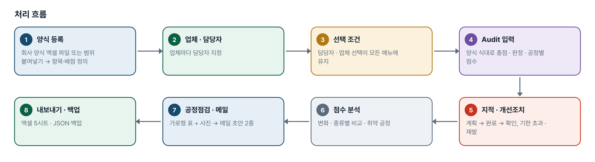
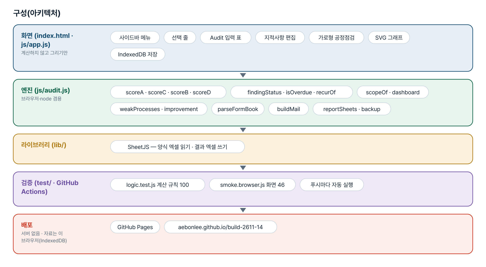
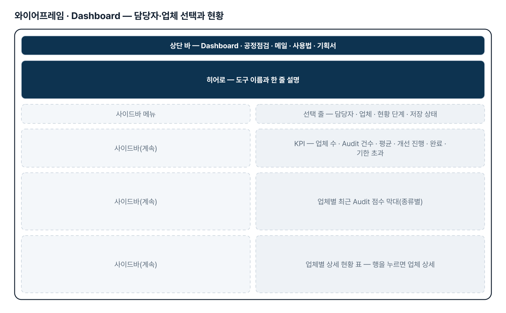
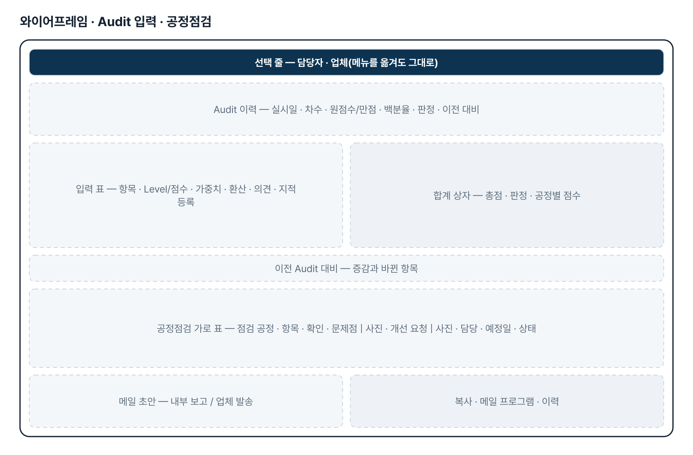
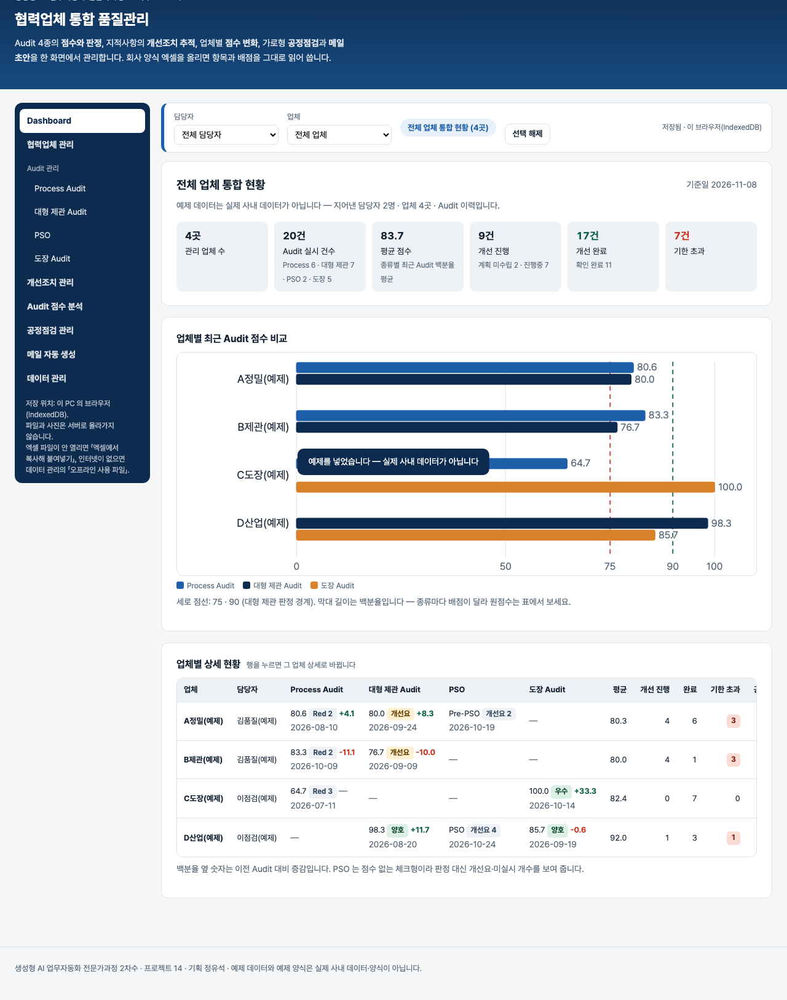

기획서 내려받기
파이프라인 · 아키텍처 · 와이어프레임 · 개발일지가 들어간 워드 문서입니다. 버전마다 따로 남깁니다.
| 버전 | 날짜 | 바뀐 점 | 파일 |
|---|---|---|---|
| v1.1 | 2026-11-08 | 11-04 요청 반영 — 회사 노트북(DRM)에서 엑셀 파일을 고를 수 없을 때 「엑셀에서 복사해 붙여넣기」(양식 4종 · 공정점검 표), CSV · TXT 파일 받기 / 결과 꺼내기 — 시트마다 표 복사(엑셀에 바로 붙임) · CSV, 백업 내용 붙여넣어 복원 / 폐쇄망 — 「오프라인 사용 파일 받기」: css · SheetJS · js 를 넣은 HTML 하나, 인터넷 없이 열림(바깥 자원 0 검사) / 주소 변경 — build-2611-14.jobability.co.kr | 워드 내려받기 |
| v1.0 | 2026-11-03 | 첫 판 — Dashboard(담당자·업체 3단) · Audit 4종 점수·판정 · 양식 엑셀 읽기 · 개선조치 추적 · 점수 분석 · 가로형 공정점검(사진) · 메일 초안 2종 · 엑셀·백업 / 기획서 워드 판·파이프라인·아키텍처·와이어프레임 추가 | 워드 내려받기 |
요구사항과 구현
| 기획서 요구 | 구현 |
|---|---|
| 대시보드 · 담당자/업체 선택 · 전 메뉴 유지 | 선택 줄을 모든 메뉴 위에 두고 localStorage 에 유지, 전체 · 담당자 · 업체 상세 3단 |
| 업체 수 · Audit 건수 · 평균 · 개선 현황 · 비교 그래프 · 상세 표 | KPI 6개 · 업체별 최근 점수 막대 · 업체 표(행을 누르면 업체 상세) |
| Audit 4종 HTML 구현 · 기존 항목·배점 유지 | 회사 양식 엑셀을 올려 머리글 낱말로 항목·배점·가중치·CTQ·선택지를 읽음(열 직접 고르기 가능) |
| 점수 입력 · 총점 자동 계산 · 저장 · 이력 · 이전 비교 | 양식의 엑셀 식 그대로 · 판정 · 공정별 점수 · 차수 자동 · 이전 대비 증감과 바뀐 항목 |
| 지적사항 · 4단계 상태 · 기한 초과 · 조치 이력 · 반복 지적 | 계획 미수립 → 개선 진행중 → 개선 완료 → 확인 완료, 기한 초과 · 재발 자동, 반복 지적 표 |
| 점수 변화 · 종류별 비교 · 개선 효과 · 취약 공정 · 원점수/백분율 | 선 그래프 · 종류별 비교 표 · 첫→최근 변화 · 공정별 평균, 원점수와 백분율을 따로 표시 |
| 가로형 공정점검 · 문제점/개선 사진 여러 장 · 진행상태 | 기획서 열 순서의 가로 표, 사진은 긴 변 1280px 로 줄여 IndexedDB 저장, 설명 입력 |
| 메일 2종 자동 생성 · 수정 · 복사 · 이력 · 입력 안 된 정보 생성 금지 | 내부 보고 6절 · 업체 발송(요청형), 빠진 정보는 「(입력 없음)」과 경고, 복사 · mailto · 이력 |
| (11-04 요청) 회사 노트북 엑셀 업로드 불가 · 폐쇄망 활용 | 엑셀 범위 복사→붙여넣기(파일과 같은 읽기) · CSV/TXT · 표 복사 · 오프라인 사용 파일(HTML 하나, 인터넷 없이) |
그림으로 보기





개발일지
2026-11-03 · 첫 판
- 패들릿 정유석 기획(협력업체 통합 품질관리 시스템)을 작업 지시서(CLAUDE.md)로 옮기고 구현
- 엔진 audit.js — 점수식 4종 · 판정 · 지적 상태 · 기한 초과 · 재발 · 집계 · 양식 엑셀 읽기 · 메일 초안 · 내보내기
- 화면 — 사이드바 9메뉴 · 선택 줄 · 입력 표 · SVG 그래프 · 사진(IndexedDB) · 엑셀 · 백업
- 회사 양식은 구조만 옮기고 항목 문장은 넣지 않음 — 지어낸 예제 양식 4종(samples/)
- 계산 테스트 100 · 화면 테스트 46 통과
2026-11-08 · v1.1 — 회사 노트북 DRM · 폐쇄망
- 정유석 11-04 댓글 「회사 노트북으로는 엑셀 파일 업로드가 불가능합니다. 폐쇄망에서도 활용할 수 있도록」 반영
- 엔진 — parsePaste(탭 · 따옴표 칸 · CSV) · decodeText(UTF-8 · CP949) · normDate · parseInspectRows · toTSV · toCSV, 붙여넣기는 파일과 같은 parseFormBook 으로 읽음
- 화면 — 양식 4종 · 공정점검 표 붙여넣기, 표 복사 · CSV, 백업 붙여넣기 복원, 오프라인 사용 파일 받기
- tools/make-offline.js · check-offline.js, 연기 테스트에서 인터넷을 끊고 file:// 로 열어 확인
- 계산 테스트 100 → 137 · 화면 테스트 46 → 65 통과